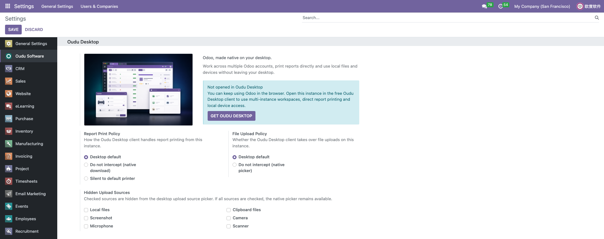
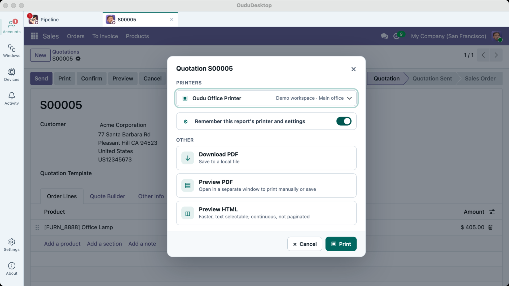
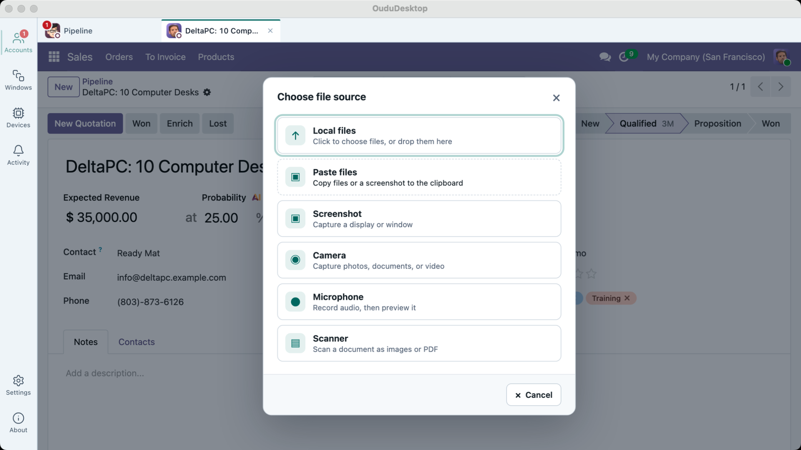
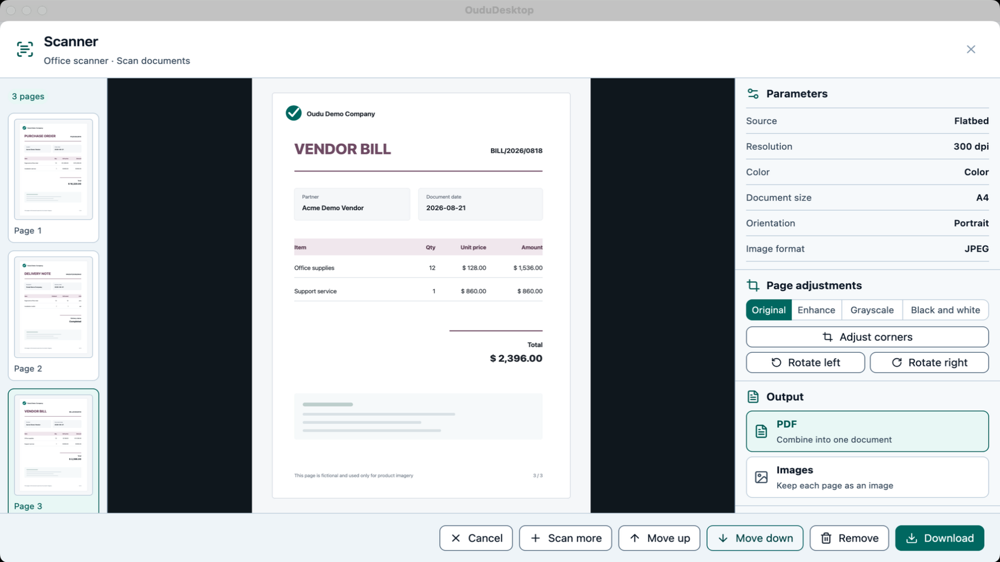

Oudu Desktop is the server-side companion for the Oudu Desktop native client. It gives administrators one place to identify an instance, publish desktop policies and verify the current client connection.
Full functionality requires the Oudu Desktop client. The module remains installable and configurable in a normal browser, and browser access to Odoo continues to work when the client is absent.
The free companion client is available from the Oudu Desktop website (https://desktop.oudu.top) and the Microsoft Store (https://apps.microsoft.com/detail/9NK0Z5PVPGJJ).

Set a shared instance name, square icon and identification color for Oudu Software products. Oudu Desktop maps them to the hosted workspace while preserving client defaults when a value is left empty.
Publishes the instance-side capability contract consumed by Oudu Desktop and shows whether Settings is currently open inside the native client.
Choose the desktop default, keep Odoo's native report download, or submit reports silently to the default printer.
Choose whether Oudu Desktop handles uploads and hide individual local, clipboard, screenshot, camera, microphone or scanner sources from its source picker.
Keep Odoo's native download, use the desktop default, or send a report silently to the default printer according to the instance policy.

The native client can offer local files, clipboard files, screenshots, camera, microphone and scanner sources while respecting the sources hidden by this instance.

Scan, review, reorder and export pages from the desktop capture workbench before returning the result to Odoo.

Configuration is instance-wide and contains no user data. If every desktop upload source is hidden, Oudu Desktop keeps the native file picker available. An incompatible or absent client falls back without blocking normal browser use.
Supports Community and Enterprise editions on self-hosted and Odoo.sh deployments for the Odoo series declared by this listing. This module does not depend on, reuse or replace any Enterprise module.